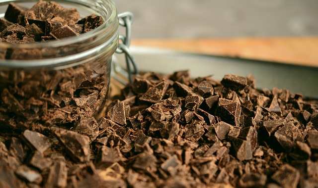
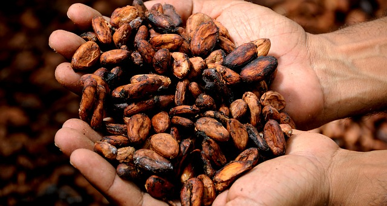

The history of chocolate can be traced to the ancient Mayans, and even earlier to the ancient Olmecs of southern Mexico. The word chocolate may conjure up images of sweet candy bars and luscious truffles, but the chocolate of today is little like the chocolate of the past. Throughout much of history, chocolate was a revered but bitter beverage, not a sweet, edible treat.
Thousands of years ago, cocoa beans were discovered in South American rain forests where the humid and tropical climate mixed with elevated rainfall created the perfect place for cocoa trees to grow. ... The Mayan civilization worshiped the cocoa tree and gave it the Latin name Cocoa which means “Food of the Gods.”
Chocolate is made from the fruit of cacao trees, which are native to Central and South America. The fruits are called pods and each pod contains around 40 cacao beans. The beans are dried and roasted to create cocoa beans.
It’s unclear exactly when cacao came on the scene or who invented it. According to Hayes Lavis, cultural arts curator for the Smithsonian’s National Museum of the American Indian, ancient Olmec pots and vessels from around 1500 B.C. were discovered with traces of theobromine, a stimulant compound found in chocolate and tea.
It’s thought the Olmecs used cacao to create a ceremonial drink. However, since they kept no written history, opinions differ on if they used cacao beans in their concoctions or just the pulp of the cacao pod.

Most modern chocolate is highly-refined and mass-produced, although some chocolatiers still make their chocolate creations by hand and keep the ingredients as pure as possible. Chocolate is available to drink, but is more often enjoyed as an edible confection or in desserts and baked goods.
While your average chocolate bar isn’t considered healthy, dark chocolate has earned its place as a heart-healthy, antioxidant-rich treat.